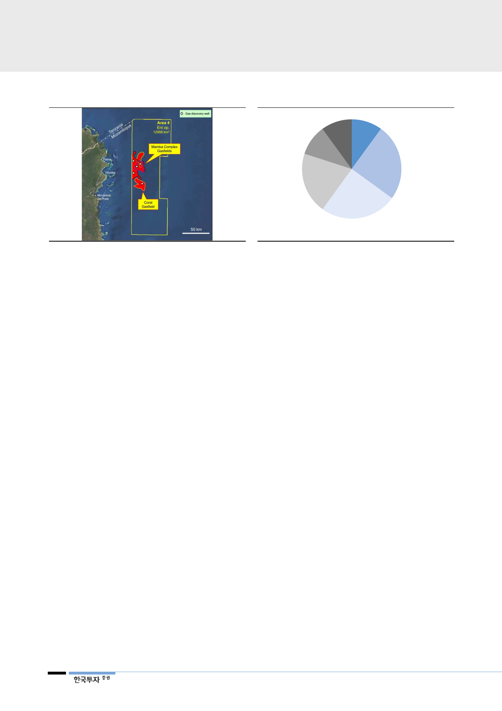

[그림 20] 모잠비크 가스전 구조
자료: 한국가스공사, 한국투자증권
[그림 21] 모잠비크 Area#4 지분율
Galp
Energia
10%
CNPC
20%
ENH KOGAS
10% 10%
ENI
25%
Exxon Mobil
25%
2017년 ENI가
지분 25%를
Exxon Mobil에
28억달러에 매각
자료: 한국가스공사, 한국투자증권
올해 말까지 해외 사업
진행여부 결정될 듯
사이프러스 탐사 실패 시
손상 약 1,600억원
이라크 아카스
환입 가능성 있음
14
3. 연말까지 주요 해외자원개발 결정 이뤄질 듯
지난 5년간 가스공사는 해외 자원개발사업에서 총 손상차손을 3.4조원을 인식
[그림 22]했다. 주된 이유는 유가하락에 따른 자산가치 조정(호주 GLNG) 및 개
발지역 정세불안에 따른 사업실행 어려움(이라크 아카스) 등이다. 이제는 더 이
상 현 유가에서 손상 발생이 어려운 상황이다. 올해 말까지 탐사 및 사업지연 프
로젝트들의 결정이 내려질 가능성이 높아 가스공사에는 불확실성 해소로 긍정적
인 상황이 펼쳐질 것이다.
손상차손이 발생 가능한 프로젝트는 탐사 단계인 사이프러스 프로젝트이다. 가스
공사는 지난 2013년 ENI와 공동으로 모잠비크 2, 3, 9 광구를 낙찰받아 탐사를
진행해왔다. 지분 비율은 가스공사가 20%, ENI가 80%다. 가스공사는 수주 후 2,
3 광구에 대한 시추를 진행해왔으나 채산성 있는 가스전을 발견하는 데 실패했다.
이미 2016년 292억원 손상을 인식해 17년 말 기준 자본금 1,233억원이 남아있
는 상황이다. 현재 성공을 장담하기는 힘든 상황이다. 다만 9광구에 석유암이 존
재한다고 판단해, 작년 종료예정이었던 탐사사업 계약을 1년 연장했다. 실패할 시
에는 추가 시추비용을 고려하면 약 1,600억원의 손상 인식이 예상된다.
반면 아카스 가스전에서는 기존에 인식했던 손상이 환입될 가능성이 있다. 아카
스 가스전은 현재 IS가 점거중인 지역으로 사업이 중단된 상황이다. 지금까지 가
스공사는 아카스 사업에서 16년 3,335억원, 17년 1,171억원두차례에 걸쳐 투자
금 대부분을 손상 처리했다. 다만 아카스 프로젝트도 여타 중동 E&P 사업과 유
사하게, 가스공사와 이라크 정부의 기술 서비스 계약(TSC, Technical Service
Contracts)으로 진행됐다. 참고로 기술서비스계약은 사업자가 지불한 비용은 해
당 국가에서 보전을 해주며 사업자는 생산량 당 수수료 수입을 확보하게 된다. 비
용 보전에 대한 부담으로, 과거 이라크 정부는 아카스 가스전 대신 낫시리아 지역
개발을 가스공사에 제안한 바 있다. 제작 완료된 기자재는 타 프로젝트에 사용이
가능하다는 점에서 손상차손 환입 가능성을 열어두어야 한다.